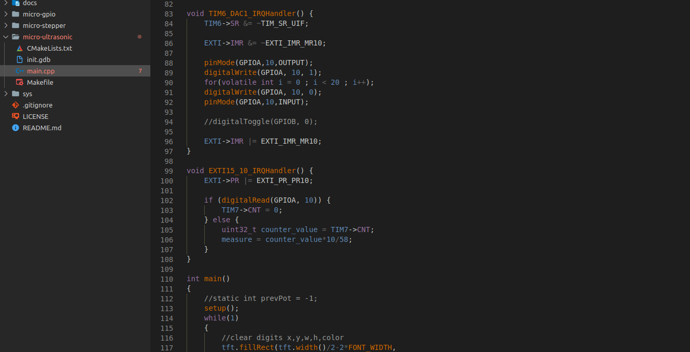
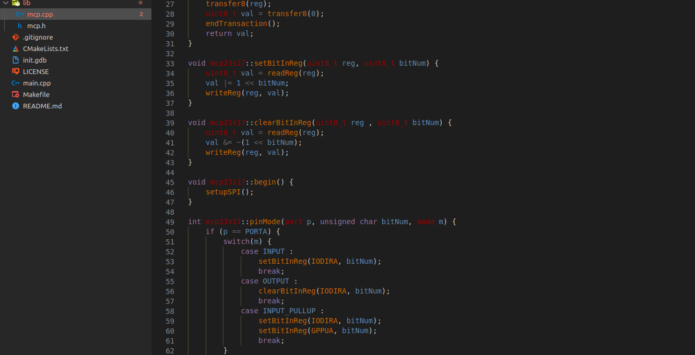

Homemade Oscilloscope A C/C++ project with a Qt-based GUI. Fetches a signal generator's data with STM32 and sends through UART the data to the desktop API. C C++ Qt STM32
GANTT Generator for Real-Time Tasks A Python project to generate Gantt diagrams from the TrampolineRTOS generated traces, or from custom entered tasks. RTOS Trampoline Python GANTT
UC-SR04 Driver  Ultrasonic sensor driver for STM32F3, using a arduino-like abstraction library, used both polling and interruptions. Embedded C C++ STM32
Calculator on CPLD VHDL description of a calculator implemented on a CPLD. (Addition, Substraction, Product) Embedded Design VHDL FPGA
MCP23S17 I/O Expander Driver  SPI Driver with arduino-like abstractions. Easy to use. Embedded C C++ STM32